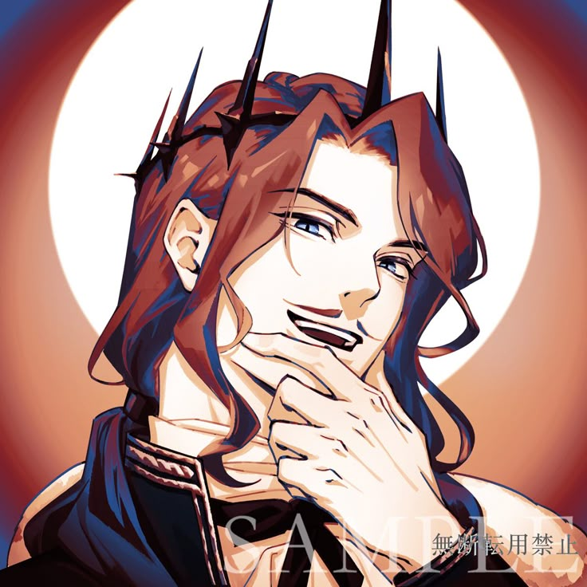

RRoselle Gustav llegó a este mundo como un hombre ordinario de otro plano de existencia y, con su conocimiento fuera de época, ascendió desde la nada hasta el trono del Imperio de Intis. Donde Klein usa su conocimiento con prudencia y discreción, Roselle lo usó con una ambición colosal: cambiar el mundo entero, acelerando el progreso tecnológico y social por siglos en el lapso de una sola vida.
El resultado fue un mundo transformado. El Imperio de Intis se convirtió en la potencia dominante de su era, y las tecnologías y conceptos que Roselle introdujo cambiaron la sociedad de formas que aún no se comprenden del todo. Pero Roselle pagó un precio que sus diarios documentan con una honestidad desgarradora.
Los diarios de Roselle son uno de los dispositivos narrativos más brillantes de la novela. Esparcidos en fragmentos a lo largo de la historia, funcionan como un mapa del laberinto que Klein está navegando —escritos por alguien que recorrió caminos similares con resultados a veces sabios y a veces catastróficos.
"He rehecho este mundo. Y a veces, en la oscuridad, me pregunto si tenía derecho a hacerlo."
Para Klein, los diarios son fuente de información vital sobre el mundo sobrenatural, pero también algo más íntimo: la voz de alguien que entendió lo que significa ser un extraño en un mundo que no es el tuyo, con todo el poder y toda la soledad que eso conlleva. Entre sus páginas hay tristeza, orgullo, arrepentimiento y humor —el humor negro de quien ha visto demasiado para seguir tomándose las cosas en serio.
A través de los diarios, Roselle emerge como un personaje complejo: brillante, ambicioso, carismático y profundamente solo. Amó. Perdió. Cometió errores cuyas consecuencias se extendieron más allá de su propia vida. Y nunca dejó de ser, bajo todas las capas del poder imperial, el hombre ordinario que llegó a este mundo sin haber pedido el viaje.
Su legado es el mundo tal como existe en la novela: con todas sus injusticias y sus bellezas, sus avances y sus corrupciones, todo moldeado en parte por las decisiones de un hombre que se creyó capaz de controlar lo incontrolable.
Roselle siguió la misma Secuencia del Fool que Klein eventualmente hereda —o quizás la correlación es más complicada que eso, dado que las Secuencias en este mundo tienen una naturaleza casi mítica. Sus niveles de poder llegaron a ser extraordinarios, alcanzando rangos que hacen palidecer a la mayoría de los Más Allá conocidos.
Lo que más destaca, sin embargo, no son sus poderes sino su capacidad para adquirirlos: Roselle entendió el sistema de las secuencias con la mente analítica de quien viene de un mundo donde los sistemas se estudian, no se reverencian. Ese enfoque racional —mezclado con una intuición excepcional— fue tanto su mayor fortaleza como, en ocasiones, su mayor punto ciego.